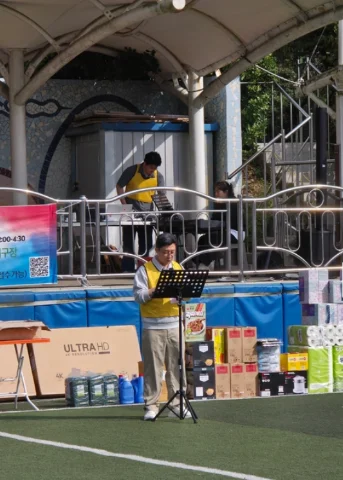
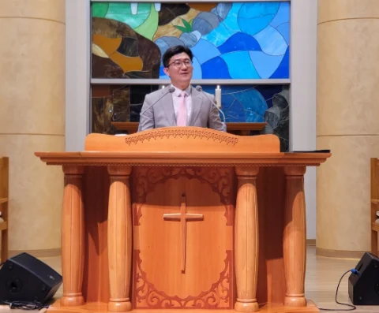
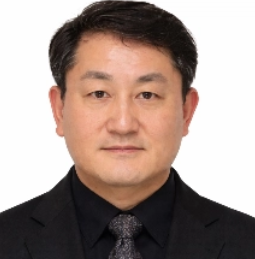
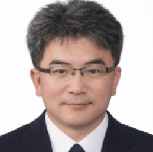
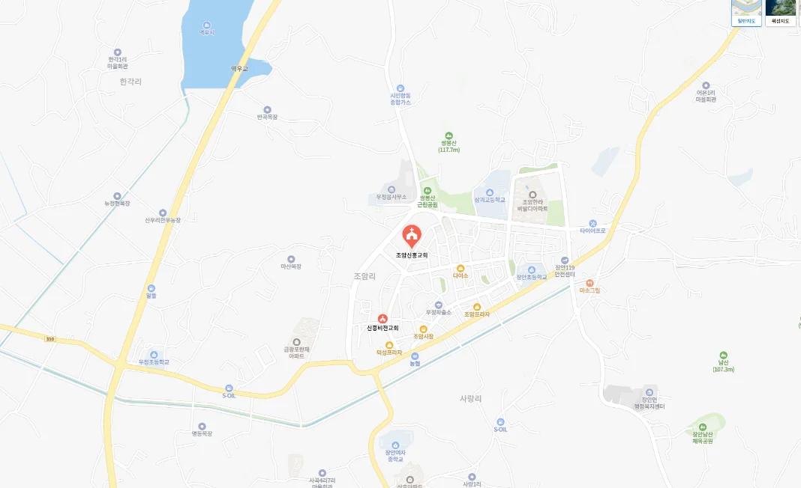

공지사항 · 수요조찬기도회 · 연합 소식을 한자리에서 확인하세요.
매월 첫 주 수요일 오전 7시, 회원교회를 순회하며
그 교회와 지역, 한국교회를 위해 함께 기도합니다.
2010년 설립 · 약칭 삼기연 · 12개 교단 49개 교회
화성특례시 삼괴지역기독교연합회는 우정읍과 장안면에서 교회를 섬기는 목회자들이 교파를 넘어 한 형제처럼 모인 작은 연합 공동체입니다. 화려한 행사가 아니라, 작은 교회와 큰 교회가 한 식탁에 둘러앉아 손을 맞잡는 자리가 곧 우리 지역 복음의 통로라 믿습니다.
교파와 규모를 넘어 매월 함께 기도하고 식탁에서 마음을 나눕니다.
우정·장안 지역 영혼을 향한 부담을 함께 짊어지고 복음의 향기를 흘려보냅니다.
작은 교회를 함께 일으키고 장학사업과 음악회로 다음 세대를 격려합니다.
연합의 발자취


예배와 기도, 친교와 섬김으로 이어지는 연중 활동을 통해 삼괴지역 교회가 하나 됩니다.
회원교회를 순회하며 그 교회와 지역, 한국교회를 위해 함께 기도합니다.
49개 교회가 함께 주님을 찬양하고 헌금을 모아 작은 교회와 지역 선교에 나눕니다.
사역의 무게를 잠시 내려놓고 목사님과 사모님이 서로의 안부를 묻는 쉼의 시간입니다.
우정읍 화수리에서 시작된 만세운동의 발자취를 화성시·교계·시민이 함께 걷습니다.
화성시기독교연합회와 회원교회가 함께 무대에 서는 음악회입니다.
회원교회 자녀와 작은 교회 사역자를 위한 장학금·후원금을 운영합니다.
제19회기 · 2026년 임원진


연합회 관련 문의는 사무총장 010-4271-5090 으로 연락 주세요.
연합회를 이끌어 오신 역대 회장단
한 해 동안 삼괴지역 교회가 함께 모이는 자리
우정읍과 장안면 곳곳의 교회가 교파를 넘어 한 형제로 연합합니다.
우정읍·장안면에서 교회를 섬기시는 목사님이라면 언제든 함께하실 수 있습니다.
가입 의사를 전해 주시면 가까운 임원회의에서 회원교회로 받아들이는 절차가 진행됩니다.
매월 첫 주 수요일 오전 7시 조찬기도회에 참석만 하셔도 동역자들과 인사를 나누실 수 있습니다.
정기총회 1개월 전까지 회비를 납부하시면 다음 회기부터 정회원으로 참여하실 수 있습니다.

2010년 11월 23일 제정 · 2026년 1월 11일 개정
각 장의 제목을 누르시면 전문을 펼쳐 보실 수 있습니다.
본 회는 “삼괴지역 기독교 연합회”라 칭한다.
본 회의 사무실 위치는 회장 목사가 시무하는 교회에 둔다.
본 회는 삼괴지역 교회들로 예수 그리스도 안에서 한 형제 된 목회자 간에 친목을 도모하고 교회 화합과 지역 복음화 및 교회부흥 발전과 지역 발전을 위해 협력함을 목적으로 한다.
삼괴지역(우정읍과 장안면)에 소재한 정통교단 교회를 담임하는 자로 한다.
본회 임원은 역원은 다음과 같이 구성한다. 회장 1인, 상임부회장 1인, 부회장 다수(교단별안배), 총무 1인, 부총무 1인, 서기 1인, 부서기 1인, 회계 1인, 부회계 1인, 위원 2인 이상으로 한다.
1) 회장: 본회의 업무를 총괄하고 본회를 대표하여 산하 단체를 지도 감독한다. 2) 상임부회장: 회장을 보좌하며 회장 유고시 그 직을 대행한다. 3) 부회장: 본 회의 사업을 함께 추진하며, 소속 교단 회원을 관리한다. 4) 사무총장: 본 회의 제반 사업을 총괄한다. 5) 부사무총장: 총무를 보좌하며 유고시 그 직무를 대행한다. 6) 서기: 본회의 기록과 서류 일체와 제반문서 수발 비치하며 관리 보관한다. 7) 부서기: 서기를 보좌하며 유고시 그 직무를 대행한다. 8) 회계: 본회의 재정 출납에 관한 일체를 담당한다. 9) 부회계: 회계를 보좌하며 유고시 그 직무를 대행한다. 10) 위원: 위원회의 역할을 담당한다.
본회의 사업을 효과적으로 수행하기 위하여 임원회에서 위원회를 조직하여 활동할 수 있다. ① 기도위원회: ‘지역 살리기 매월 첫 주 수요기도회’를 계획하고 진행하여 지속적인 기도운동을 전개한다. ② 복지선교위원회: 회원 교회의 복지선교사업을 돕고 지역의 복지관련 사업과 협업하는 일을 담당한다.
매년 11월 중에 개최하여 결산, 예산, 사업계획을 심의 통과하고 임원을 선출한다.
회원 5인 이상의 발의로 회장이 필요시 소집한다.
본 회는 영적 성장과 교제를 위하여 매월 첫 주 수요일 조찬기도회를 갖는다.
격월로 하되 조찬기도회로 대체할 수 있고 필요시 별도 회의를 소집할 수 있다.
회장이 소집한다.
본회의 임원의 자격은 회원의 의무수행에 모범된 자라야 한다.
임원의 임기는 다음과 같다. 1) 회장의 임기는 2년으로 하되 1회에 한하여 연임할 수 있다. 2) 기타 임원은 연임할 수 있다.
1) 회장: 지난 회기 상임부회장이 특별한 사건이 없는 한 회장직을 승계한다. 2) 상임 부회장: 총회에서 선출한다. 3) 부회장: 회원 중에서 교단별로 대표를 정하여 회장단이 총회 후 선임한다.
총무 이하 임원은 총회 후 회장과 상임 부회장이 추천하여 선임한다.
본회의 고문은 증경 회장단 중 증경회장단 회비를 납부한 이로 한다.
본회의 감사는 전임과 전전임 증경회장으로 하되 임기는 2년으로 하고 본회의 사업 및 재정 일체를 감사하여 총회시 보고한다.
회장을 역임한 이로 교회를 담임하고 만 70세 이하인 이들로 구성한다.
회원은 각종 회의에 참석하며 결의되어 시행하는 각종 사업에 적극 동참하고 협조할 의무를 가진다.
회원은 선거권, 피선거권, 발언권, 결의권이 있으며 불이익을 받지 않으며 복리 사업에서 혜택을 받을 권리가 있다.
1) 본회에 공헌한 회원에게는 임원회의 결의로 회장이 이를 포상할 수 있다. 2) 본회의 명예에 손상을 준 자 또는 회의나 집회에 2년 이상 참석치 못하거나 회원의 의무를 감당하지 못할 시는 회원 자격이 자연 상실되며 의무 이행시 임원회의 결의를 거쳐 자격이 복구된다.
본 회의 재정은 회원들의 회비와 각 교회의 찬조와 헌금, 후원금으로 한다. 1) 회비는 회장은 월 10만원, 상임 부회장은 월 3만원, 부회장 및 임원단은 월 2만원, 증경회장은 연 10만원, 일반회원은 연 5만원으로 한다. 2) 행사 찬조 및 후원금은 회비로 대체할 수도 있다.
본회의 재정지출은 임원회의 결의로 한다.
본 회의 회계년도는 본회 행정년도로 한다.
다음 각 항에 해당할 때, 조화나 화환, 축의금을 보낸다. 그 금액은 10만원을 넘길 수 없다. 1) 회원의 직계가족 중 배우자, 부친, 모친, 자녀가 상을 당했을 때 (장모, 장인 제외) 2) 자녀가 결혼을 했을 때 3) 은퇴, 부임
회칙 개정은 총회에서 참석 과반 수 이상의 동의를 얻어 개정할 수 있다.
본회 회칙의 미비 된 사항은 만국통상 관례에 따른다.
본회 회칙은 통과 시부터 그 효력을 발생한다.
제정 2010. 11. 23. · 개정 2011. 11. 28. · 개정 2012. 11. 29. · 개정 2021. 03. 16.
개정 2022. 12. 13. · 개정 2025. 01. 12. · 개정 2026. 01. 11.